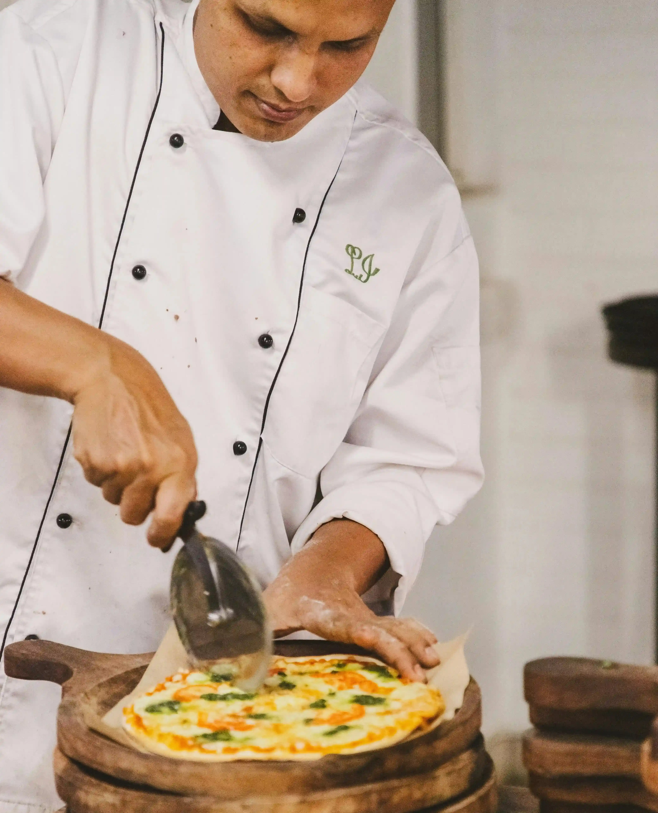
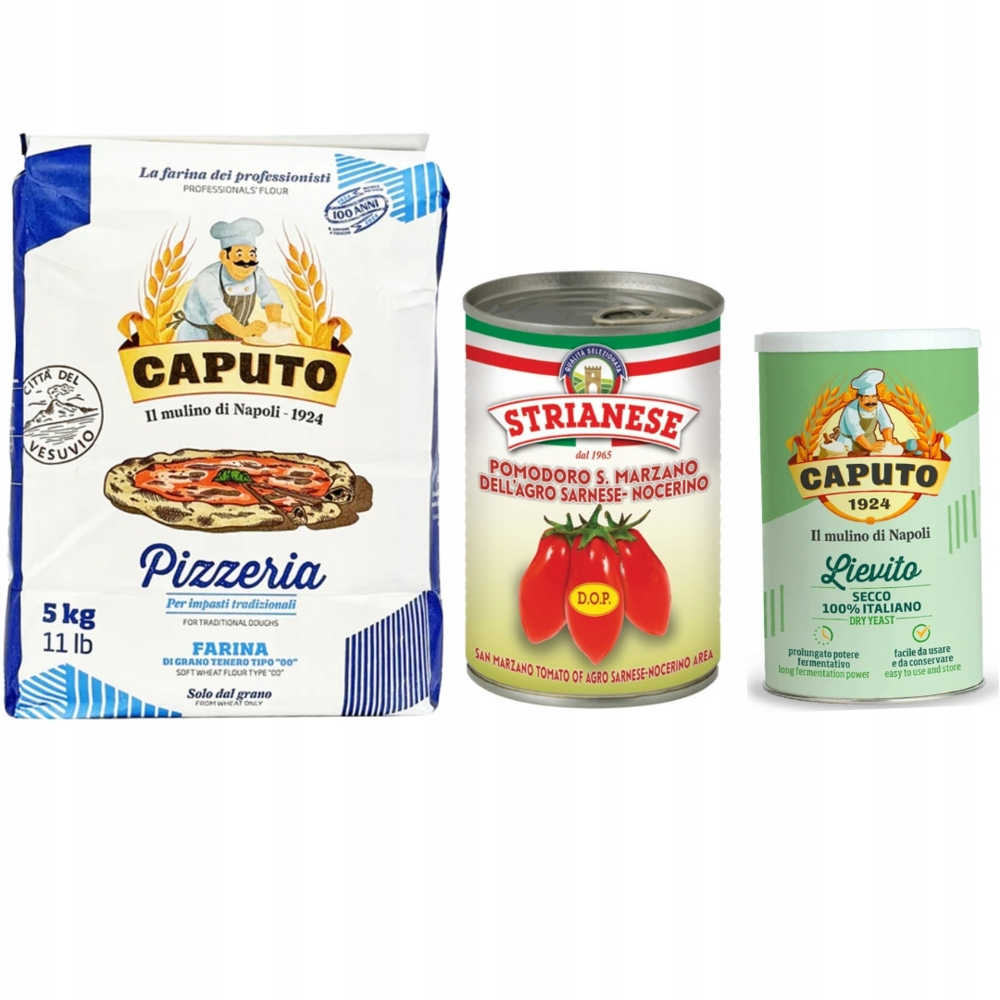
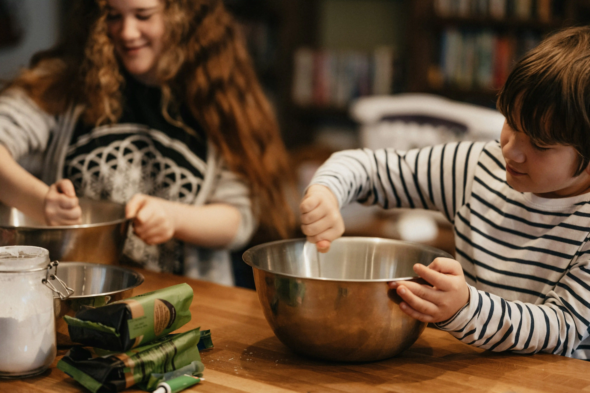

Suroviny z Talianska
Múka Caputo, San Marzano paradajky, olivový olej z Umbrie – dovážame priamo od overených talianskych producentov.
Od rodinnej túžby po jednu z najobľúbenejších pizzerií v meste. Toto je príbeh Bistroteca.

V roku 2012 otvorili manželia Pixelatovci malú pizzeriu s jediným cieľom – priniesť do mesta Pizzanovce chuť pravého Neapola, akú poznali z detstva v južnom Taliansku.
Giovanni Pixelato sa naučil remeslo priamo od neapolských majstrov pizze. Každý deň vstal pred svitaním, aby pripravil cesto, a večer stál pri peci, kým posledný hosť neodišiel spokojný. Táto oddanosť sa nezmenila dodnes.
Dnes je Bistroteca & Pizzeria miestom, kde sa stretávajú generácie – rodiny, páry aj gurmáni, ktorí hľadajú autentickú taliansku chuť bez kompromisov.

Múka Caputo, San Marzano paradajky, olivový olej z Umbrie – dovážame priamo od overených talianskych producentov.

Naša rodina stojí za každým jedlom. Poznáme mená našich stálych hostí a staráme sa o každý detail.
V roku 2024 sme získali ocenenie „Najlepšia neapolská pizza na Slovensku" od Asociácie talianskych podnikateľov.
Pizza nie je jedlo, ktoré sa pripravuje. Pizza je emócia, ktorá sa zdieľa. Keď vidím spokojnú rodinu pri spoločnom stole, viem, prečo robím to, čo robím.— Giovanni Pixelato, šéfkuchár a zakladateľ
Rezervujte si stôl a presvedčte sa sami o kvalite, ktorá hovorí sama za seba.
Rezervovať stôl